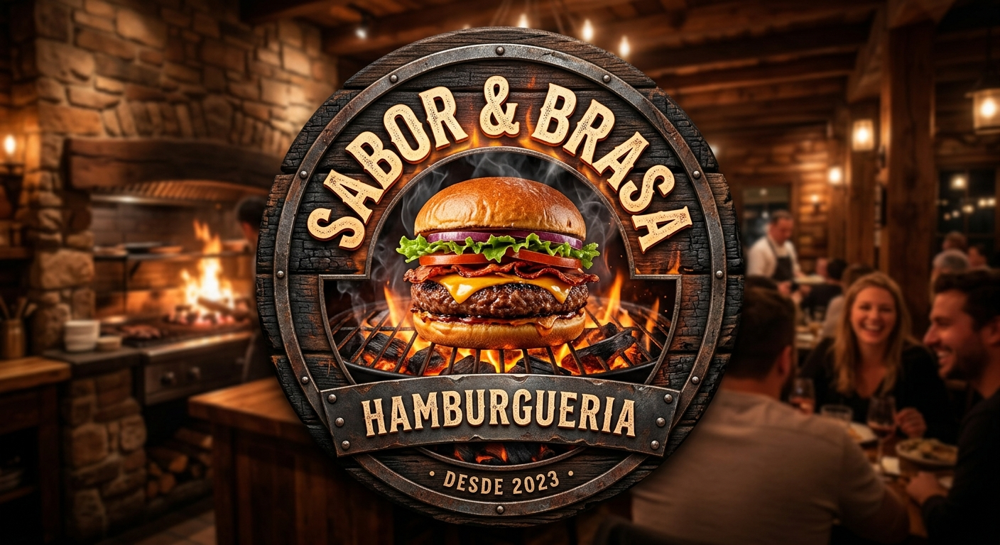
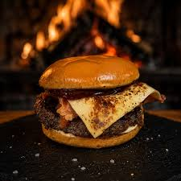

Olá,
Seja bem-vindo
Sabor & Brasa!
Sabor & Brasa!
Bem-vindo à Churrascaria Sabor & Brasa Na Sabor & Brasa, transformar cortes nobres em momentos inesquecíveis é a nossa paixão. Selecionamos rigorosamente as melhores carnes e as preparamos na brasa com o carinho e a técnica que só quem entende de churrasco pode oferecer. Nosso compromisso vai além do sabor: oferecemos um buffet completo de saladas frescas, pratos quentes e acompanhamentos tradicionais, além de um rodízio variado que atende aos paladares mais exigentes. Seja para um almoço em família, um jantar especial ou uma celebração de negócios, o lugar perfeito é aqui.
__________________________________________________________________________________________________

O Segredo da Nossa Brasa O segredo de um bom churrasco está na paciência, no controle exato da temperatura e no respeito ao tempo de cada corte. Na Sabor & Brasa, nossas carnes são assadas em fogo de chão e grelhas preparadas para selar o suco natural do alimento, garantindo maciez incomparável e aquele sabor defumado característico da brasa de carvão selecionado.
__________________________________________________________________________________________________
Conheça meus últimos projetos
